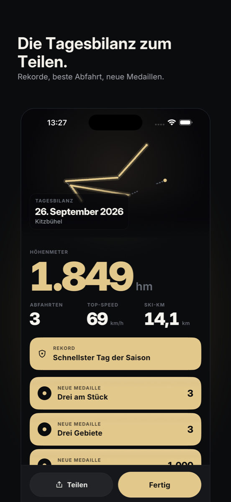

SlopeTrack – Ski-Tracker
Ein Tipp startet den Tag. Abfahrten, Höhenmeter, Tempo – und Ranglisten pro Land und Skigebiet.
Bald im App Store
SlopeTrack zählt deinen Skitag automatisch, auch mit gesperrtem iPhone, und stellt dich – wenn du willst – in Ranglisten, Duelle und Wochen-Challenges. Punkte, Level, Streaks und Medaillen entstehen auf deinem Gerät.